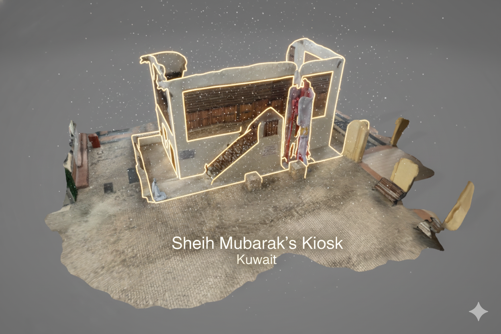
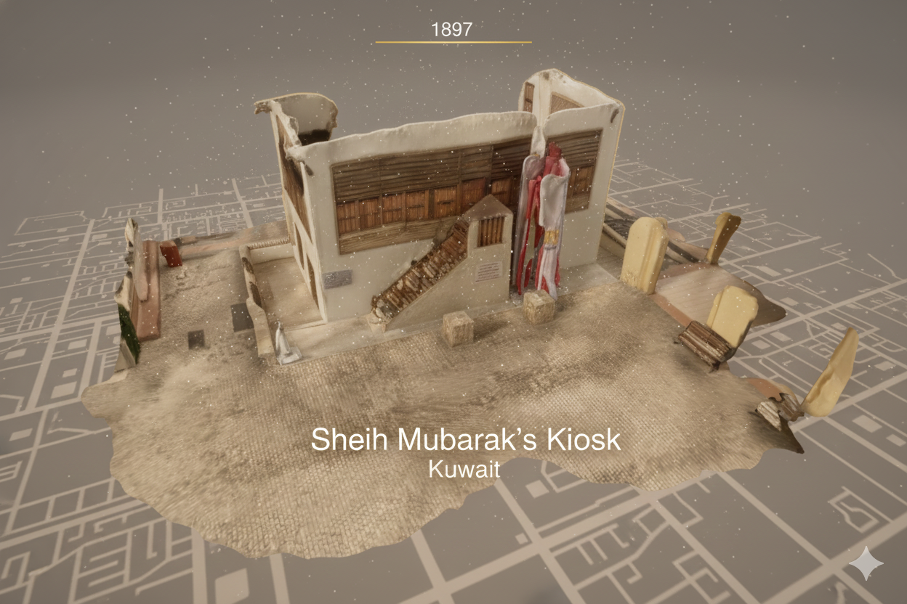
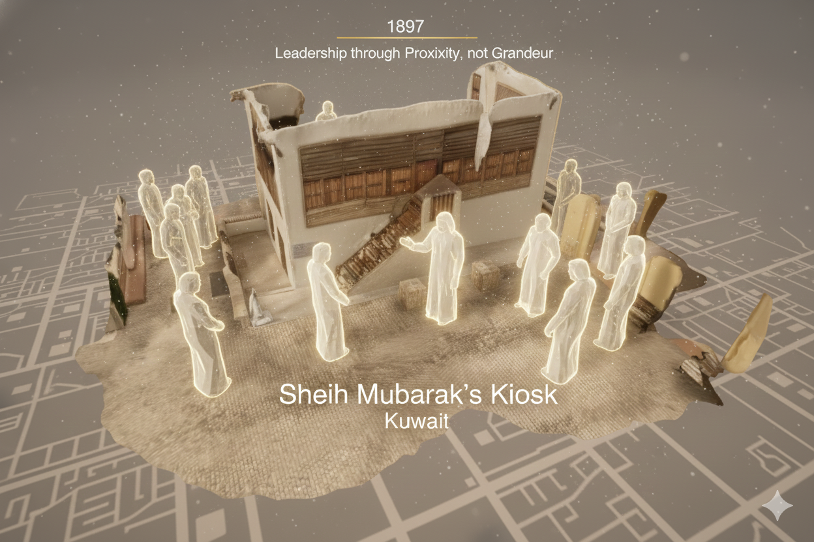
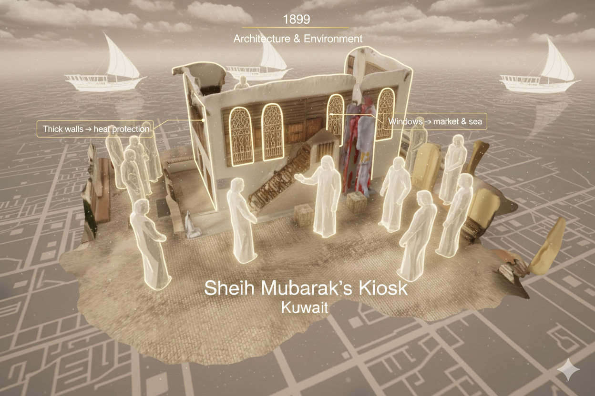
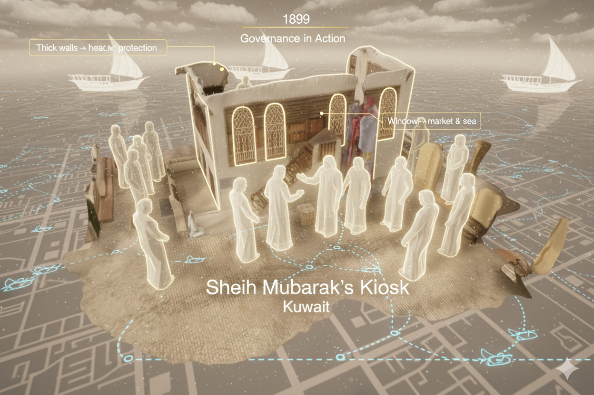
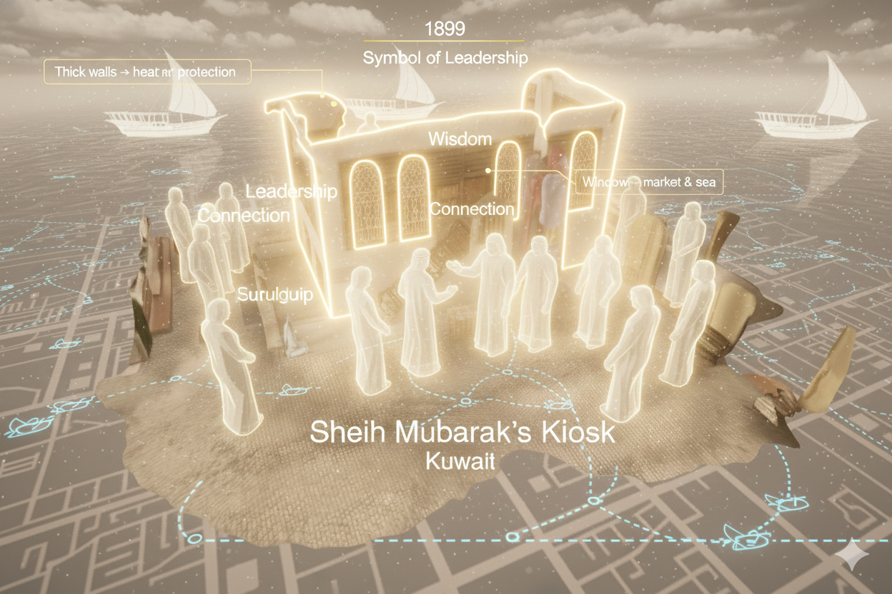
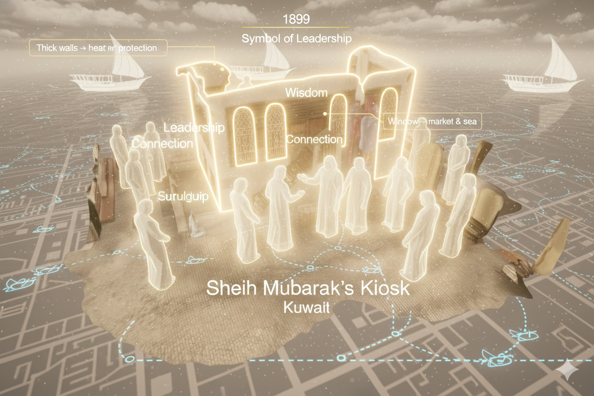
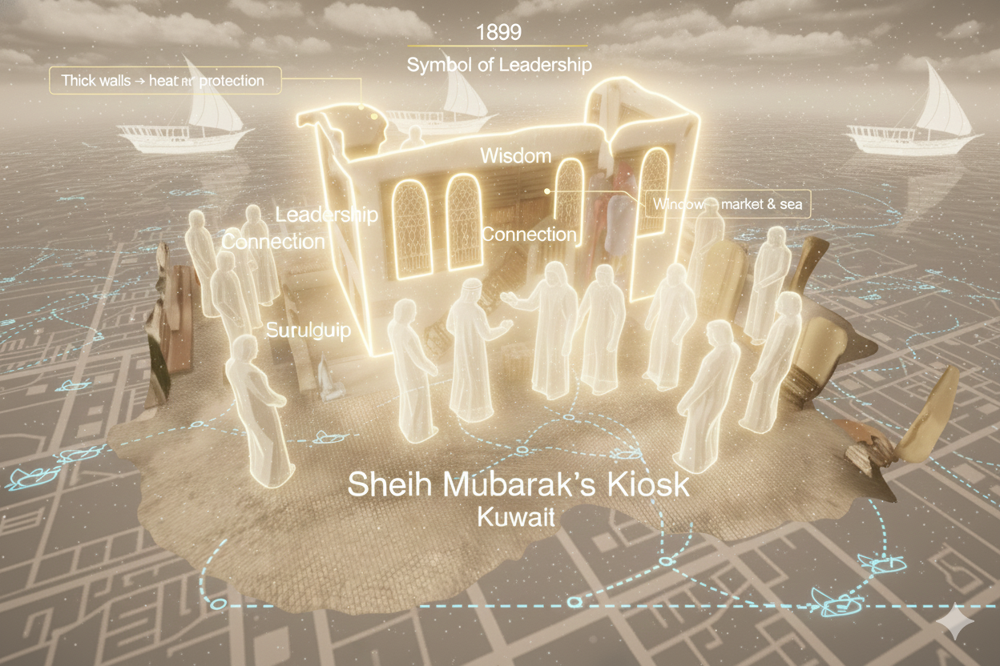

Chapter 1: Arrival & Discovery
“In a quiet corner of Kuwait’s old city…”
The experience awakens with soft animated dust. A semi-transparent golden light outline elegantly traces the real kiosk's edges. Text appears identifying the site: Sheikh Mubarak’s Kiosk, Kuwait.

Chapter 2: Time Transition (1897)
“The story begins in 1897…”
The date '1897' appears as a ripple wave transforms the world. Modern colors shift into warm sepia and sand, while historical map lines faintly overlay the ground.

Chapter 3: Purpose of the Kiosk
“Designed as a place for governance and connection...”
The Sheikh’s silhouette appears on the balcony as ghostly figures approach the door below. Shadowy guards stand at the entrance, all rendered in a mystical, abstract style.

Chapter 4: Architecture & Environment
“Its simple yet strategic architecture…”
Floating architectural labels highlight the thick stone walls and high ceilings. In the background, ghostly Dhow boats appear in the distant AR sky.

Chapter 5: Governance in Action
“Inside, Sheikh Mubarak would sit daily…”
A merchant approaches for discussion as a map of Kuwait with glowing trade routes appears on the floor, accompanied by the subtle sounds of a busy market.

Chapter 6: Symbol of Leadership
“This was not merely an administrative building…”
The kiosk is bathed in a soft golden aura. Floating words—Leadership, Wisdom, and Connection—appear and dissolve gently into the structure.

Chapter 7: Then & Now
“Over time… this small structure became a powerful symbol.”
The world blends back to the present day. Subtle reflections of red, green, and white light dance across the stone, honoring the Kuwaiti flag.

Chapter 8: Closing Moment
“A history that remains alive…”
Effects fade, leaving the real kiosk. A final golden outline traces the building for ten seconds, a lasting tribute to its historical significance.